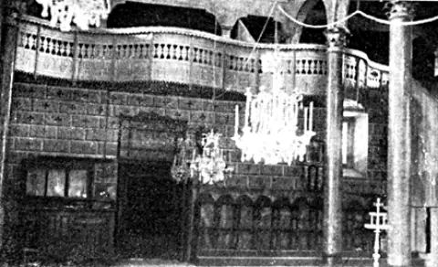

Историјат · 1944
Детаљи цркве Св. Богородице
13 фотографија унутрашњости саборне цркве Св. Богородице. Више у Хришћански храмови.

Унутрашњост Св. Богородице - саборне цркве . Лево је проповедаоница у дубокој резби, а десно поред стуба, ближе олтару, архијерејски престо.

Северни брод храма са проповедаоницом и
краљевским престолом.

Јужни брод са архијерејским престолом.

Проповедаоница, израђена у уметничком дуборезу 1838. године, и степенице поред ње.

Архијерејски престо у цркви Св. Богородице,
израђен 1838. године.

Краљевски престо у храму.

Средњи брод храма Св. Богородице са иконостасом и архијерејским престолом.

Горњи део средњег брода храма са слепим кубетом у таваници.

Горњи део иконостаса (у дубокој резби) израђен је 1838. године од ораховог дрвета, а доњи део од белог мермера.


Западна страна са женском црквом (на галерији).

Поглед на стубове и зид средњег брода храма (северна страна).

Десна страна мермерног иконостаса са иконама Христа Спаситеља и Св. Јована Крститеља.

Лева страна мермерног иконостаса са иконама Пресвете Богородице и Рођења Богородице.